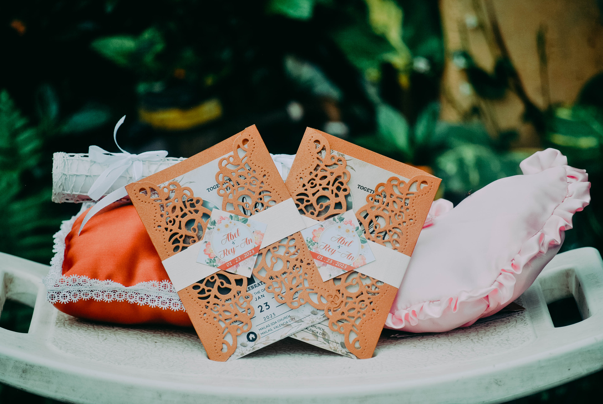
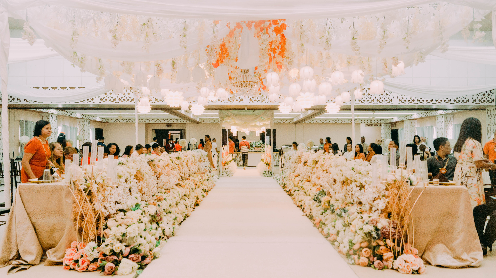

Welcome to my Flex Page
I'm a
Take a peek.
Photography
I am a Freelance Photographer
Photography has been always a niche of mine. I like to take portrait shots and landscape shots of breathtaking views specially here in Bukidnon. When the pandemic hits, I indulged more on studying how to become a better photographer. And because of that, I was able to take pre-nup shots and wedding shots. I also took some pre-debut shots and more.
 Brides Maid
Brides Maid

Invitations
Portrait

Venue